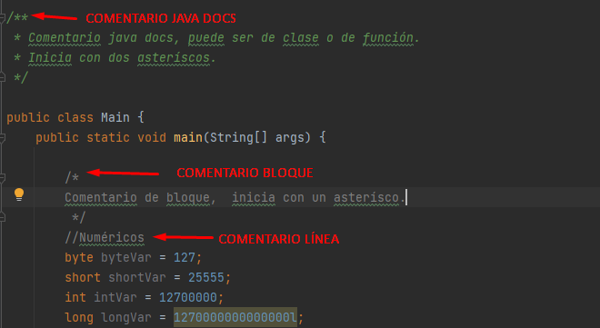
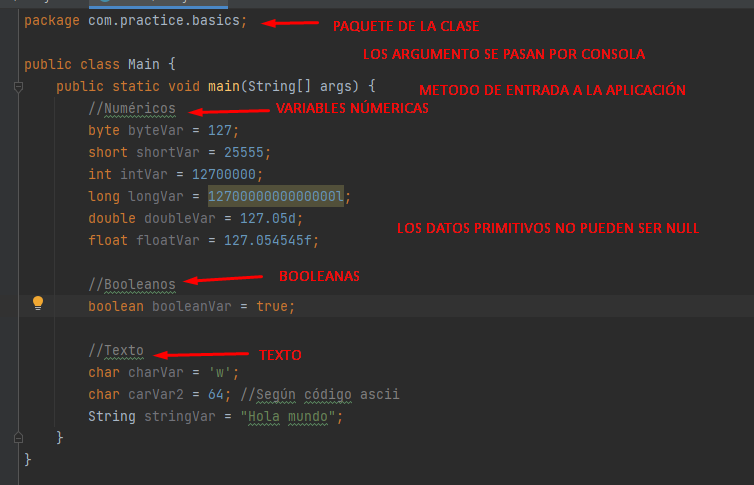
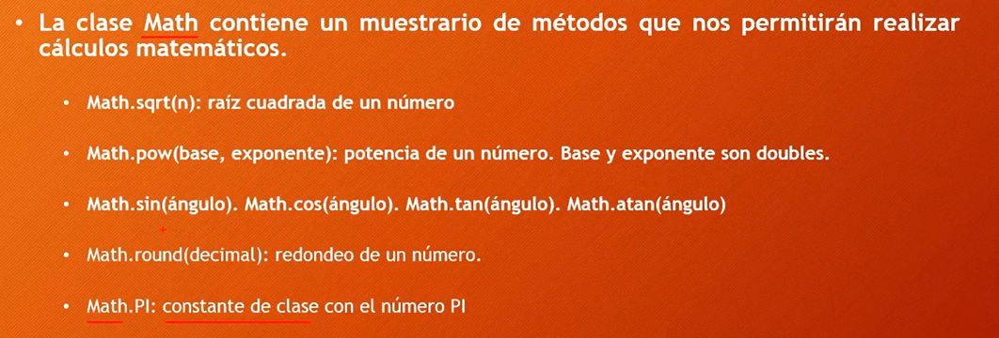
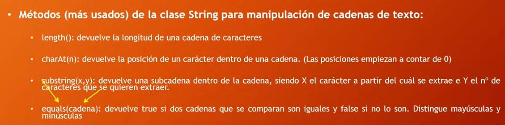

Los tipos de comentarios puede ser de java docs, de bloque o de línea.
En java existen datos primitivos y clasess, los datos primitivos no pueden ser 'null'.
Pertenece al paquete java.lang que se carga por defecto.
Pertenece al paquete java.lang que se carga por defecto.
